Hướng dẫn quy trình vệ sinh nhà xưởng đúng chuẩn từ A – Z
Vệ sinh nhà xưởng là công việc cần ưu tiên thực hiện thường xuyên nhằm mang đến môi trường làm việc sạch sẽ, an toàn và thuận lợi cho người lao động. Để đảm bảo vệ sinh một cách nhanh chóng, hiệu quả các doanh nghiệp sẽ cần tiến hành vệ sinh theo đúng quy trình chuẩn. Vậy quy trình vệ sinh nhà xưởng gồm các bước nào? Các thiết bị chuyên dụng cho khâu vệ sinh công nghiệp gồm những gì? Hãy cùng tìm hiểu qua bài viết này nhé!
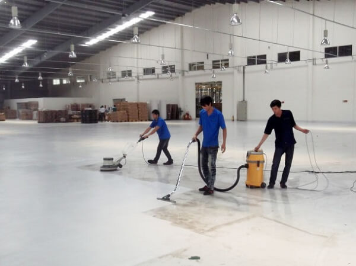
Vệ sinh nhà xưởng là gì?
Vệ sinh nhà xưởng là công việc bao gồm thực hiện vệ sinh, làm sạch trần nhà xưởng; vệ sinh hệ thống máy móc, thiết bị công nghiệp; dọn dẹp khu vực xung quanh nhà xưởng;… Các khu vực này sẽ cần tiến hành vệ sinh thường xuyên và định kỳ. Điều này là bởi môi trường nhà xưởng thường có rất nhiều bụi bẩn, khí thải ô nhiễm do máy móc, thiết bị công nghiệp hoạt động liên tục.
Để có thể đảm bảo một môi trường làm việc sạch sẽ và an toàn cho sức khỏe của người lao động thì việc áp dụng quy trình vệ sinh đúng chuẩn sẽ là điều cần thiết.
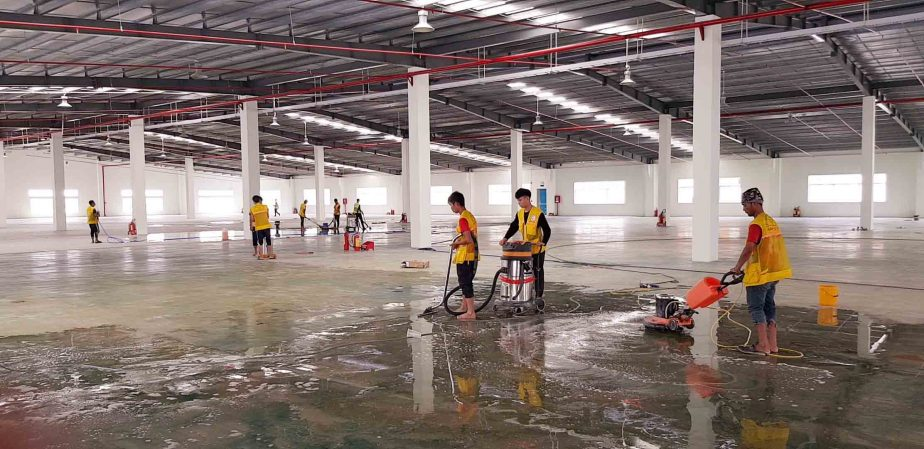
Tại sao phải vệ sinh nhà xưởng định kỳ?
Nhà xưởng là khu vực làm việc trực tiếp, nơi hoạt động sản xuất diễn ra thường xuyên và liên tục do đó sẽ tích tụ rất nhiều bụi bẩn. Chính vì vậy cần thực hiện vệ sinh định kỳ theo đúng quy trình chuẩn để mang đến nhiều lợi ích cho cả doanh nghiệp và người lao động.
Tạo ra một môi trường làm việc sạch sẽ
Sau một thời gian hoạt động, không gian nhà xưởng chắc chắn sẽ tích tụ rất nhiều bụi bẩn cũng như các vết bám “cứng đầu”. Bụi bẩn không chỉ bám lại trên các thiết bị, máy móc mà còn tích tụ trên tường nhà, trần nhà hay các ngóc ngách. Việc làm sạch nhà xưởng thường xuyên nhằm đảm bảo tạo môi trường làm việc sạch sẽ, tăng tính thẩm mỹ cho nhà xưởng doanh nghiệp.
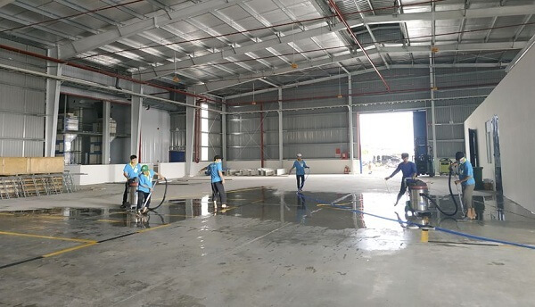
Hơn thế, một môi trường làm việc thanh sạch, không có bụi bẩn sẽ giúp người lao động yên tâm làm việc, gia tăng năng suất đồng thời đảm bảo được chất lượng thành phẩm sản xuất ra.
Đảm bảo về an toàn sức khỏe người lao động
Trên thực tế, một môi trường nhà xưởng với bụi bẩn tích tụ lâu ngày sẽ mang đến những tác động tiêu cực đến sức khỏe của người lao động. Không chỉ ảnh hưởng trực tiếp đến cơ quan hô hấp mà có thể gây ra nhiều chứng bệnh nghiêm trọng khác nếu tiếp xúc với không khí ô nhiễm trong thời gian dài. Do đó, doanh nghiệp cần tuân theo quy trình vệ sinh nhà xưởng đúng chuẩn để đảm bảo sức khỏe và năng suất lao động của các nhân viên.
Bảo trì, bảo dưỡng máy móc chất lượng
Hệ thống thiết bị, máy móc nhà xưởng sau một thời gian dài sử dụng sẽ bị bám các lớp bụi dày hay dầu máy tồn đọng. Chính những yếu tố này sẽ làm giảm hiệu suất làm việc của máy hoặc thậm chí làm giảm tuổi thọ thiết bị. Việc thực hiện vệ sinh nhà máy, nhà xưởng thường xuyên đặc biệt là với những thiết bị công nghiệp sẽ giúp làm giảm hư hao, sự cố máy. Nhờ vậy doanh nghiệp tiết kiệm được chi phí sửa chữa hay thay mới hoàn toàn thiết bị.
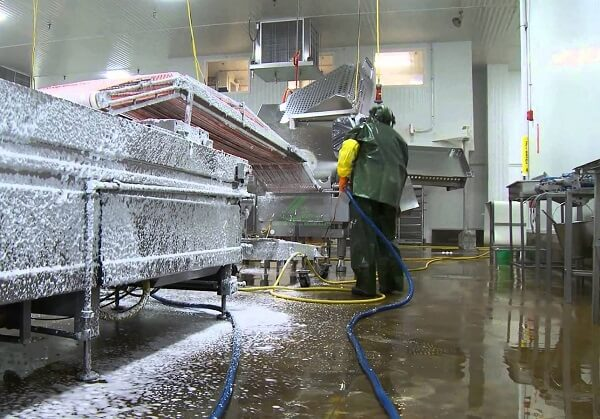
Tăng năng suất và đảm bảo tinh thần cho nhân viên
Để đảm bảo công nhân viên có thể làm việc một cách thoải mái và hiệu quả trong công xưởng thời gian dài, một môi trường làm việc an toàn và sạch sẽ là rất quan trọng. Việc này không chỉ giúp tăng năng suất làm việc mà còn đảm bảo sức khỏe cho nhân viên. Đồng thời, việc lựa chọn các chất tẩy rửa công nghiệp từ các thương hiệu uy tín cũng rất quan trọng để đảm bảo an toàn cho sức khỏe của người lao động.
Các sản phẩm được sản xuất trong nhà xưởng cần phải được bảo quản trong một môi trường an toàn và sạch sẽ trước khi đến tay người tiêu dùng. Nếu trong quá trình sản xuất xuất hiện các lớp bụi bẩn bám vào hàng hoá, điều này có thể ảnh hưởng đến chất lượng và uy tín của công ty.
Các dụng cụ để vệ sinh nhà xưởng
Để quá trình vệ sinh nhà xưởng diễn ra một cách hiệu quả và suôn sẻ, không thể thiếu các dụng cụ cần thiết. Các dụng cụ và thiết bị phục vụ cho mục đích làm sạch nhà xưởng có thể bao gồm:
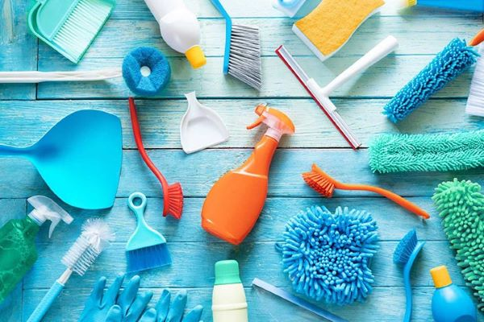
- Thiết bị vệ sinh công nghiệp: Được vận hành bằng điện, ắc quy hoặc pin, có công suất hoạt động lớn bao gồm máy hút bụi, máy lau sàn, máy chà sàn, xe quét rác, máy giặt thảm và sofa, máy phun rửa cao áp, máy rửa bằng hơi nước nóng, hệ thống máy lau kính, máy thổi khô sàn và thảm,…
- Dụng cụ vệ sinh công nghiệp: xe đẩy vệ sinh công cộng, xe đẩy 3 tầng, cây lau sàn ướt và khô, chổi quét bụi trần, ky hốt rác, xô đựng dung dịch vệ sinh, cây lau kính và nhiều dụng cụ khác.
- Dung dịch hóa chất vệ sinh công nghiệp: Giúp loại bỏ nhanh chóng các vết dầu mỡ, hóa chất và bụi bẩn cứng đầu bao gồm nước lau sàn, dung dịch vệ sinh toilet, nước bảo dưỡng sàn, nước lau kính, dung dịch đánh bóng bề mặt gỗ và kim loại, dung dịch sát khuẩn, nước khử mùi,…
Các mục cần vệ sinh trong nhà xưởng
Ngoài các tiêu chuẩn vệ sinh nhà xưởng đã được đề cập và đội ngũ thực hiện còn cần thực hiện việc làm sạch kỹ lưỡng cho nhiều hạng mục khác nhau, bao gồm:
- Lau chùi các lối ra – vào của nhà xưởng.
- Vệ sinh trần, tường của nhà xưởng, đặc biệt là ở các góc tường thường bám nhiều bụi và mạng nhện.
- Loại bỏ bụi bẩn và khói bụi có thể bám trên bề mặt của máy móc và thiết bị.
- Làm sạch các loại cửa như cửa sổ, cửa ra vào bằng kính, inox hay gỗ bằng dung dịch chuyên dụng.
- Lau dọn, làm sạch và đánh bóng bàn ghế bằng gỗ và kim loại.
- Vệ sinh các đường ống, dây điện, cáp,… nhằm giảm thiểu rủi ro về cháy nổ và chập điện.
- Vệ sinh các loại lưới ngăn côn trùng để có thể cải thiện hiệu suất làm việc của chúng.
Quy trình để vệ sinh nhà xưởng đúng tiêu chuẩn
Dưới đây là mẫu quy trình vệ sinh nhà xưởng đạt chuẩn được vận dụng trong thực tiễn hoạt động của nhiều doanh nghiệp. Cùng tham khảo 5 bước sau đây:
Bước 1: Vệ sinh khu vực trần nhà khu nhà xưởng
Bước đầu tiên trong quy trình vệ sinh nhà xưởng đó là vệ sinh khu vực trần nhà. Khu vực trần nhà xưởng thường có độ cao dao động từ 8 – 12m. Do đó để thực hiện bước này sẽ cần đến sự hỗ trợ của các thiết bị như xe nâng người, giàn giáo,… Người thực hiện trực tiếp cũng cần trang bị đầy đủ quần áo bảo hộ gồm: nón bảo hộ, giày, dây thắt an toàn, kính, găng tay,…
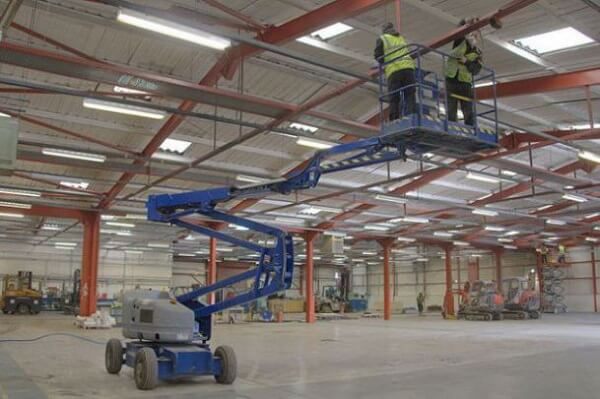
Trần nhà khu nhà xưởng thường là khu vực cực kỳ dễ bám bụi, bám bẩn cũng như mạng nhện. Thực hiện vệ sinh trần nhà theo quy trình chuẩn thì sẽ cần áp dụng biện pháp làm sạch bằng chổi quét trần nhà, chổi quét mạng nhện và cây lau trần nhà,…
Bước 2: Thực hiện vệ sinh các vị trí xung quanh nhà xưởng
Bước tiếp theo trong quy trình vệ sinh là làm sạch bề mặt tường xung quanh nhà xưởng. Nhân viên vệ sinh sẽ tiến hành quét sạch bụi bẩn và mạng nhện bám trên tường. Tiếp đó tiến hành lau chùi lại bề mặt lần nữa cho sạch sẽ.
Bước 3: Vệ sinh các thiết bị máy móc trong nhà xưởng
Bước tiếp theo không thể bỏ qua chính là vệ sinh hệ thống máy móc, thiết bị nhà xưởng. Các loại máy móc, thiết bị sau thời gian dài sử dụng thường bám rất nhiều bụi bẩn, dầu máy và các vết bẩn “cứng đầu”. Tùy thuộc vào đặc điểm của từng loại mà có cách vệ sinh cho phù hợp. Để đảm bảo hiệu quả làm sạch cũng như độ bền của thiết bị, ta sẽ cần có sự tham vấn, hỗ trợ từ đội ngũ kỹ thuật của nhà xưởng. Bởi nếu vệ sinh bằng hóa chất không phù hợp, không đúng cách sẽ rất dễ làm hư hỏng máy.
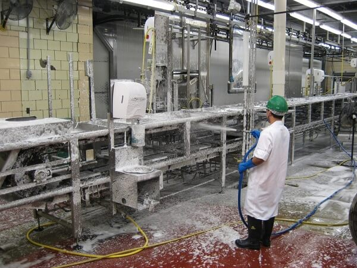
Bước 4: Tiến hành vệ sinh làm sạch sàn nhà xưởng
Bước kế tiếp sẽ là tiến hành làm sạch sàn nhà xưởng. Đây được xem là công đoạn mất nhiều thời gian nhất. Bởi khu vực sàn nhà là nơi có tần suất đi lại cao và thường xuyên. Bề mặt sàn do đó thường chứa rất nhiều bụi bẩn, dầu máy, hóa chất,… do đó cần đòi hỏi bước vệ sinh kỹ càng.
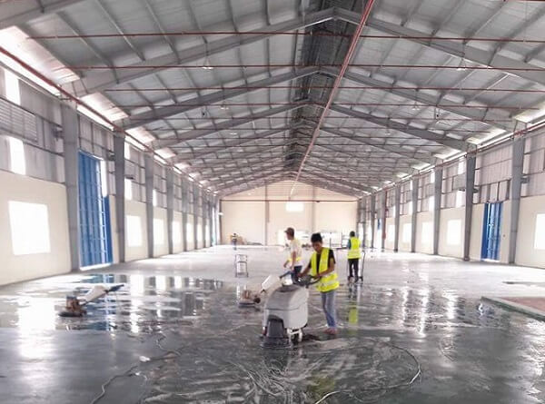
Hiện nay, doanh nghiệp có thể sử dụng các loại thiết bị hiện đại phục vụ lau dọn, làm sạch sàn nhà xưởng như: máy hút bụi công nghiệp, máy chà sàn, máy lau sàn nhà xưởng,… Việc lựa chọn hóa chất tẩy rửa sàn nhà cũng rất quan trọng, đảm bảo hóa chất mang lại hiệu quả làm sạch cao và nhanh chóng cho từng loại sàn.
Bước 5: Kiểm tra tổng thể các khu vực đã vệ sinh
Cuối cùng, đơn vị vệ sinh cần kiểm tra lại một cách tổng thể các khu vực đã tiến hành làm sạch trước đó. Bước này là cần thiết để kiểm tra xem khu vực nào chưa được vệ sinh sạch sẽ và đạt chuẩn để tiến hành làm sạch lại lần nữa. Hoàn tất quy trình vệ sinh khi mọi khu vực nhà xưởng đã được dọn dẹp sạch sẽ.
Tiêu chuẩn để vệ sinh nhà xưởng đúng chuẩn
Nguyên tắc một chiều
Nguyên tắc vệ sinh một chiều quy định về việc làm sạch, loại bỏ hoàn toàn bụi bẩn, vết bám trên bề mặt tường, kính,… theo một chiều nhất định. Tránh tình trạng lau đi lau lại nhiều lần khiến bụi bám lại trên bề mặt. Theo nguyên tắc này, khâu vệ sinh nhà xưởng sẽ được thực hiện đơn giản, dễ dàng mà không bỏ sót bất kỳ chi tiết nào.
Vệ sinh từ khô đến ướt
Vệ sinh từ khô đến ướt là quét sạch bụi bẩn, vết bám bằng cách vật dụng như: chổi, máy hút bụi, máy thổi,… trước khi vệ sinh ướt bề mặt. Nhờ đó có thể giảm được thời gian vệ sinh, giảm lượng hóa chất và tăng hiệu quả làm sạch các bề mặt hay thiết bị, máy móc công nghiệp.
Vệ sinh từ trên xuống dưới và từ trong ra ngoài
Tiêu chuẩn vệ sinh nhà xưởng tiếp theo cần chú trọng chính là vệ sinh từ trên xuống dưới và từ trong ra ngoài. Cụ thể như quy trình được đề cập ở trên, cần làm sạch trần nhà trước; đến bề mặt tường xung quanh; máy móc, thiết bị và cuối cùng là khu vực sàn nhà. Tương tự, làm sạch từ các ngóc ngách bên trong nhà xưởng trước rồi mới đến hành lành để tránh phải dọn dẹp lại.
Cần làm vệ sinh từ trong các phòng trước khi ra tới hành lang để không phải dọn lại hành lang nếu dọn các phòng sau cùng. Đội ngũ nhân công sẽ cần vận dụng linh hoạt tiêu chuẩn này cho phù hợp với thực tế các khu vực nhà xưởng.
Những nội quy cần tuân thủ khi vệ sinh nhà xưởng
Quy trình vệ sinh nhà xưởng, khu công nghiệp cũng đặt ra nhiều nội quy dành cho người lao động như sau:
- Nhân viên vệ sinh cần trang bị đầy đủ quần áo, thiết bị bảo hộ lao động trong suốt quá trình làm việc.
- Thực hiện vệ sinh theo đúng quy trình chuẩn, tuyệt đối không thực hiện ngược lại với quy trình.
- Trước khi tiến hành vệ sinh cần kiểm tra lại tất cả máy móc, thiết bị cũng như dụng cụ lao động cần thiết. Trường hợp phát hiện hư hỏng, sự cố thiết bị cần báo ngay cho công ty để được đổi mới.
- Không tự ý vệ sinh máy móc, thiết bị nhà xưởng nếu không có sự am hiểu hoặc chưa được sự đồng ý của nhân viên kỹ thuật.
- Nhân viên buộc phải nắm vững các kiến thức cơ bản về các loại máy móc, thiết bị vệ sinh cũng như cách sử dụng đúng chuẩn.
Các thiết bị vệ sinh nhà xưởng hiệu quả tốt nhất hiện nay
Quy mô nhà xưởng, nhà máy công nghiệp khá rộng lớn. Do đó quy trình vệ sinh nhà xưởng là không hề dễ dàng nếu không có sự trợ giúp từ các loại thiết bị, máy móc vệ sinh. Trong đó, nổi bật phải kể đến các dòng sản phẩm: máy hút bụi nhà xưởng công suất lớn và máy lau chà sàn công nghiệp. Dưới đây chúng tôi tổng hợp các model máy vệ sinh chuyên dụng và hiệu suất cao:
Máy hút bụi nước Fiorentini C73F1
Máy hút bụi nước Fiorentini C73F1 là loại thiết bị chuyên dụng làm sạch bụi bẩn cho các bề mặt sàn, tường nhà,… Sản phẩm được sản xuất trên dây chuyền công nghệ hiện đại từ Italia, sở hữu nhiều ưu điểm vượt trội như:
- Thiết bị có công suất mạnh mẽ, hiệu năng vượt trội, không chỉ hút sạch bụi bẩn mà còn có khả năng hút nước thải.
- Thùng chứa bụi có dung tích khá lớn, cho phép vệ sinh trong thời gian dài mà không cần xả bụi quá nhiều lần.
- Máy được thiết kế nhỏ gọn, hệ thống bánh xe di chuyển linh hoạt, tiện dụng.
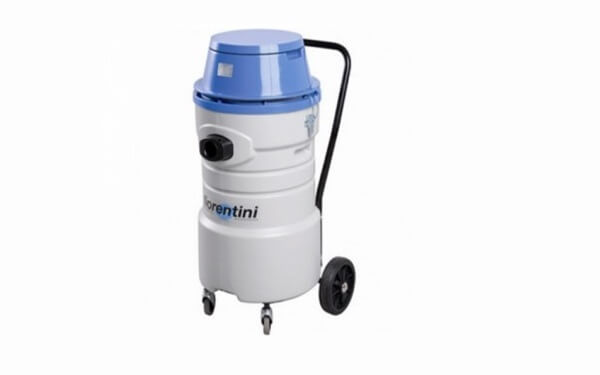
Thông số kỹ thuật:
| Thương hiệu | Fiorentini |
| Model | C73F1 |
| Công suất | 3000W (3 motor x 1000W) |
| Lưu lượng hút | 645 m3/h |
| Đường kính ống hút | Ø 40 mm |
| Dung tích bình chứa bụi | 75 lít |
| Thùng chứa | Nhựa ABS |
| Độ ồn | 83dB |
| Phụ kiện kèm theo | Bàn hút nước, bụi, đầu chổi tròn và đầu hút kẹt |
| Trọng lượng máy | 23kg |
| Xuất xứ | Italia |
Máy hút bụi công nghiệp Delfin DG 200
Máy hút bụi Delfin DG 200 là một trong những model máy hút bụi công suất cao cho hiệu quả hút bụi tốt nhất hiện nay. Sản phẩm được thị trường đánh giá cao nhờ vào các ưu điểm:
- Thiết bị hoạt động bền bỉ và ổn định liên tục suốt nhiều giờ nhờ nguồn điện 3 pha.
- Thiết kế máy nhỏ gọn kết hợp bánh xe di chuyển tiện dụng.
- Có thể tháo rời thùng chứa bụi để dễ dàng xả bụi và vệ sinh.
- Bộ lọc khí có khả năng lọc sạch bụi bẩn, đặc biệt là bụi mịn.
- Thân máy sản xuất từ inox cao cấp phun sơn tĩnh điện nhờ vậy chống chịu va đập tốt, bảo vệ linh kiện máy.
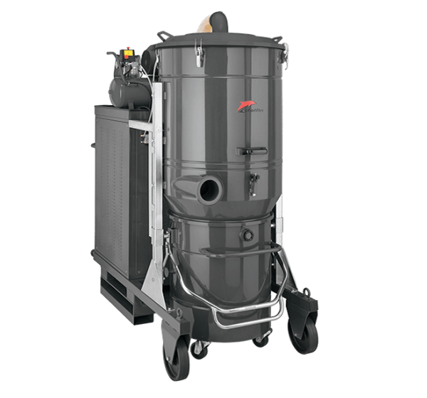
Thông số kỹ thuật:
| Thương hiệu | Delfin |
| Model | DG 200 |
| Nguồn điện | 3 pha 380V – 50Hz |
| Công suất | 18.5 kW |
| Lưu lượng hút | 1400m3/h |
| Đường kính ống hút | Ø 120 mm |
| Dung tích bình chứa bụi | 220 lít |
| Thùng chứa | Inox |
| Độ ồn | 78dB |
| Phụ kiện kèm theo | Bàn hút nước, bụi, đầu chổi tròn, đầu hút kẹt |
| Trọng lượng máy | 663kg |
| Kích thước | 97x207x222cm |
| Xuất xứ | Italia |
| Bảo hành | 12 tháng |
Máy chà sàn Fiorentini model DELUX 43BM
Model máy chà sàn liên hợp Fiorentini Delux 43BM là giải pháp thích hợp dành cho các khu vực nhà xưởng, khu công nghiệp, trung tâm thương mại, sân bay, bệnh viện, trường học,… Thiết bị vừa có chức năng làm sạch vừa có khả năng bảo dưỡng bề mặt nền đá công trình.
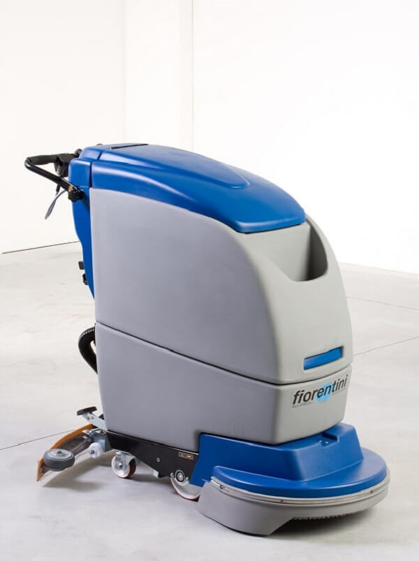
Thông số kỹ thuật:
| Thương hiệu | Fiorentini (Italia) |
| Model | DELUX 43BM |
| Hiệu quả làm sạch | 1800 m2/h |
| Thời gian làm việc liên tục | 3-4h |
| Dung tích thùng chứa nước sạch | 55L |
| Dung tích thùng chứa nước bẩn | 53L |
| Tốc độ làm việc | 0-4 km/h |
| Motor bàn chải chà | 550W |
| Motor hút nước | 400W |
| Bề rộng thanh hút nước | 750mm |
| Áp lực chà | 20-40 kg |
| Độ ồn | <72 db |
| Acquy | 2x12V, 157Ah |
| Kích thước (DxRxC) | 100x48x106 cm |
| Trọng lượng | 160 kg |
Máy chà sàn ngồi lái Fiorentini ET 65
Máy chà sàn Fiorentini ET 65 thuộc loại vận hành ngồi lái với phần ghế ngồi có lưng tựa thoải mái. Ưu điểm máy chà sàn ngồi lái Fiorentini ET 65 có thể kể đến:
- Máy được trang bị motor công suất lớn, giúp lau chà sàn sạch sẽ và nhanh chóng.
- Đổ xả chất thải, nước bẩn sau quá trình lau chà sàn cực kỳ đơn giản.
- Bảng điều khiển thông tin, hiển thị chính xác những thông số giúp người dùng dễ dàng nắm được tình trạng thiết bị.
- Vận hành máy chà sàn ngồi lái ET 65 không quá khó, có thể sử dụng ngay lập tức sau khi được chỉ dẫn.
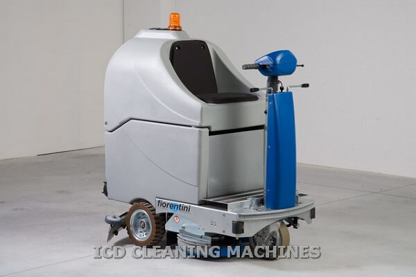
Thông số kỹ thuật:
| Thương hiệu | Fiorentini (Italia) |
| Model | ET 65 |
| Điện áp | 24V |
| Hiệu quả làm sạch | 3900 m2/h |
| Thời gian làm việc liên tục | 5h |
| Dung tích thùng chứa nước sạch | 125L |
| Dung tích thùng chứa nước bẩn | 105L |
| Tốc độ làm việc | 0-6 km/h |
| Motor bàn chải chà | 700W |
| Motor hút nước | 400W |
| Bề rộng thanh hút nước | 650mm |
| Áp lực chà | 30 kg |
| Độ ồn | <70 db |
| Acquy | 4x 6V – 330A/h + 4x 6V – 250A/h |
| Kích thước (DxRxC) | 1170 x 640 x 1260mm |
| Trọng lượng | 185 kg |
Máy chà sàn liên hợp đẩy tay Magnum V5
Model máy chà sàn liên hợp Magnum V5 sở hữu nhiều tính năng hiệu suất. Đây là thiết bị chuyên dụng được sử dụng phổ biến tại các nhà xưởng, nhà máy sản xuất, sân bay, trung tâm thương mại,… Một vài ưu điểm nổi bật của dòng máy này như:
- Thiết bị được sản xuất trên dây chuyền công nghệ của Magnum (Italia).
- Thiết kế máy nhỏ gọn, cho phép làm sạch mọi khu vực, ngóc ngách với hiệu suất cao.
- Quá trình vận hành không phát ra tiếng ồn quá lớn, chỉ ở mức 67dB.
- Bảng điều khiển thông minh cùng màn hình cảm ứng hiện đại mang lại trải nghiệm thân thiện với người dùng.
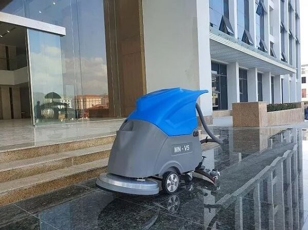
Thông số kỹ thuật:
| Thương hiệu | Magnum |
| Model | Magnum V5 |
| Điện áp | 24V |
| Hiệu quả làm sạch | 2300m2/h |
| Thời gian làm việc liên tục | 4 – 5h |
| Dung tích thùng chứa nước sạch | 55L |
| Dung tích thùng chứa nước bẩn | 60L |
| Tốc độ làm việc | 4 km/h |
| Motor bàn chải chà | 550W |
| Motor hút nước | 500W |
| Độ ồn | <67 dB |
| Acquy | 24V / 100Ah |
| Kích thước (DxRxC) | 1270x600x990 mm |
| Trọng lượng | 152 kg |
Những lưu ý khi vệ sinh nhà xưởng
Trong quá trình vệ sinh nhà xưởng, các doanh nghiệp cần chú ý đến các yếu tố quan trọng sau:
- Tuân thủ các quy định về an toàn lao động khi thực hiện vệ sinh và làm sạch nhà xưởng.
- Đảm bảo đội ngũ nhân viên được trang bị đầy đủ thiết bị bảo hộ như áo, mũ, găng tay, giày, ủng…
- Tránh sử dụng nước sạch khi làm sạch máy móc và thiết bị điện; thay vào đó, sử dụng khăn khô hoặc dụng cụ làm sạch chuyên dụng và tư vấn kỹ thuật nếu cần thiết.
- Hạn chế tiếp xúc với các khu vực nguy hiểm như khu vực ổn áp và ổ điện, sử dụng chất tẩy rửa đúng lượng và loại để bảo vệ sức khỏe của nhân viên và của nhà xưởng.
- Tránh đổ nước hoặc chất tẩy rửa trực tiếp lên bề mặt máy móc và thiết bị để tránh hư hỏng và nguy cơ cháy nổ.
- Sử dụng thiết bị vệ sinh nhà xưởng khi đã hiểu rõ về chúng và thực hiện theo quy trình đúng cách.
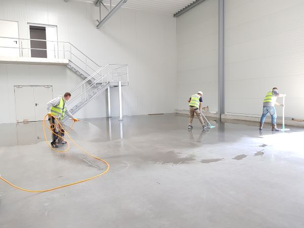
Kết luận
Vệ sinh nhà xưởng là công đoạn quan trọng cần được thực hiện thường xuyên và định kỳ. Hiểu được tầm quan trọng đó, các doanh nghiệp cần tuân thủ thực hiện theo quy trình vệ sinh nhà xưởng đúng chuẩn từ A – Z để tạo ra môi trường làm việc thanh sạch, an toàn. Chúng tôi cũng đã tổng hợp các loại máy móc, thiết bị chuyên dụng cho khâu vệ sinh công nghiệp để khách hàng có thể tham khảo!
Nếu có nhu cầu tìm mua sản phẩm thiết bị vệ sinh như máy hút bụi công suất lớn hay máy chà sàn nhà xưởng,… hãy liên hệ ngay với ICD CLEANING MACHINE để được tư vấn tốt nhất!
 Cho thuê máy chà sàn công nghiệp tại Hà Nội – 02422009188
Cho thuê máy chà sàn công nghiệp tại Hà Nội – 02422009188 Tư vấn cách chọn lựa máy chà sàn nhà gia đình
Tư vấn cách chọn lựa máy chà sàn nhà gia đình Có nên mua máy hút bụi công nghiệp cho gia đình?
Có nên mua máy hút bụi công nghiệp cho gia đình?